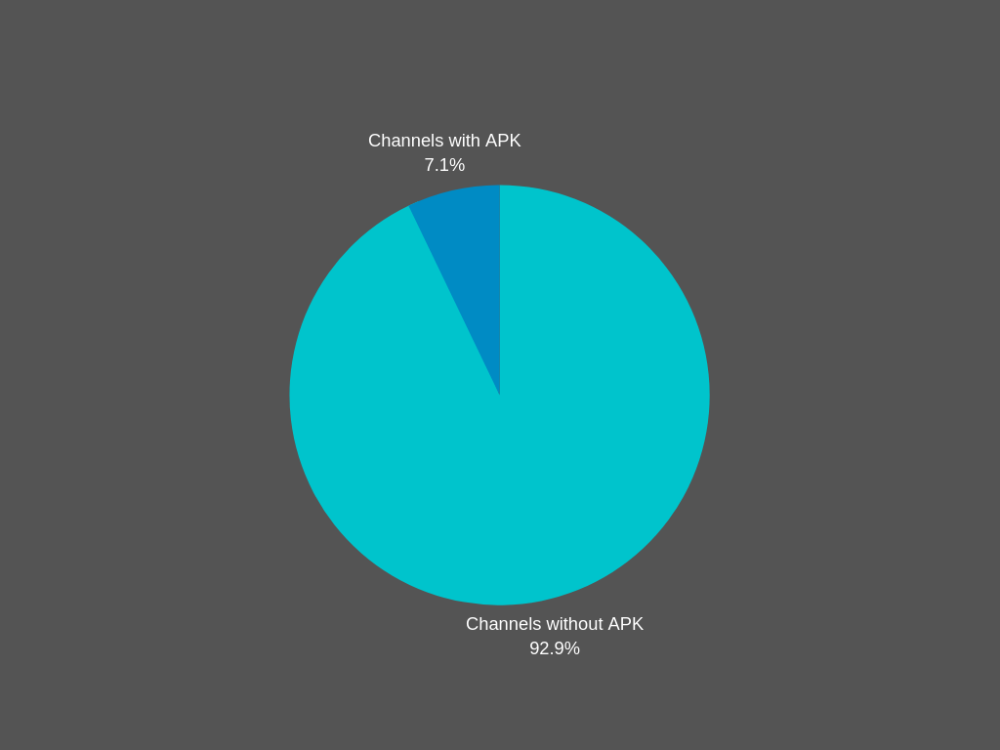
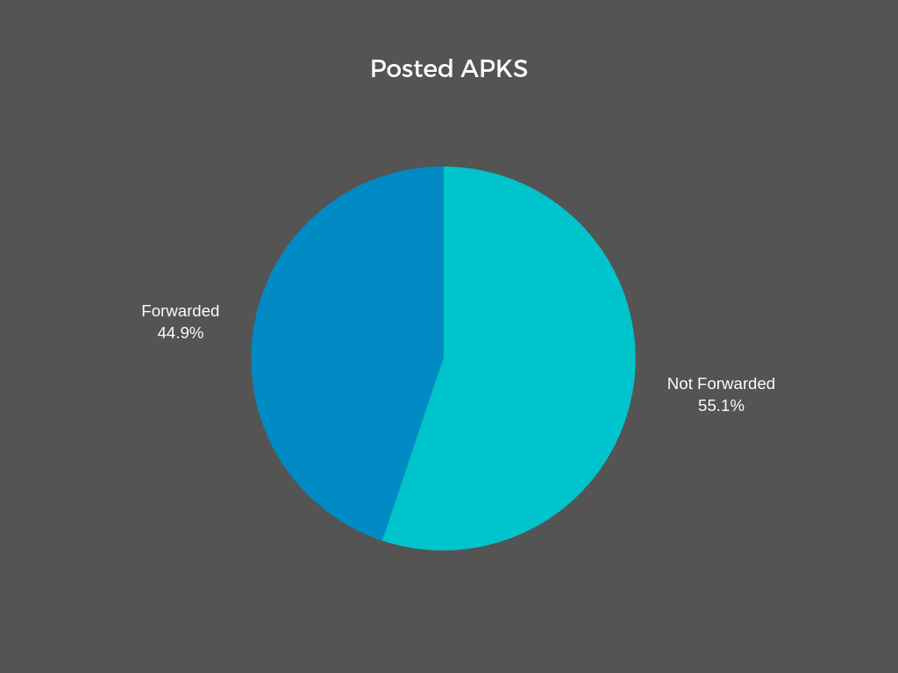
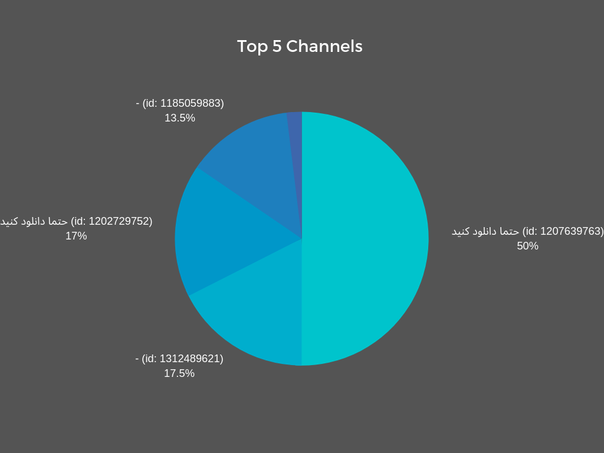
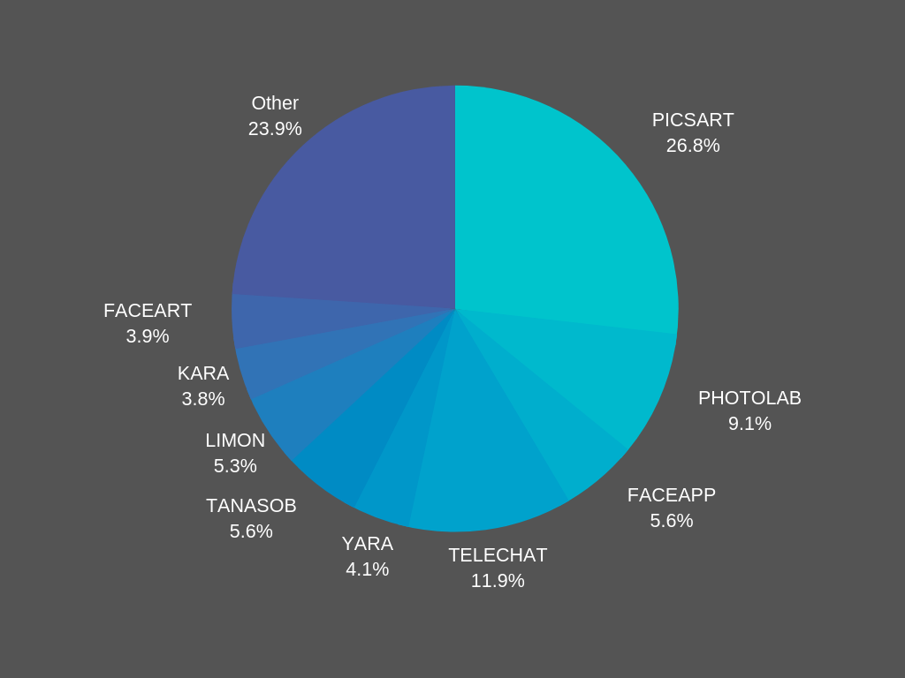
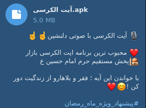
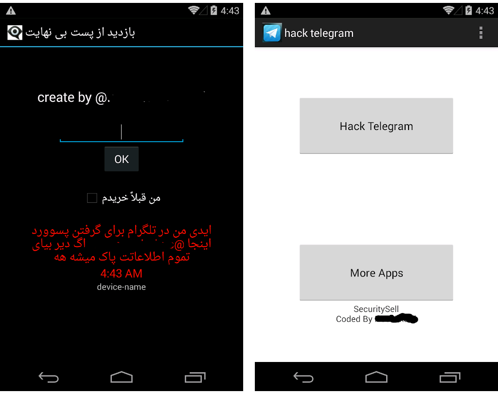

مدت هاست که به نوشتن و توسعه خزنده های اینترنتی (برنامه های کامپیوتری که به جمع آوری اطلاعات مشغولن و در محیطی مثل وب یا تلگرام پخش میشن و جاهای جدیدی رو تحت نظر میگیرن) مشغولم و یکی از این خزنده هارو سه ماه پیش روی تلگرام راه اندازی کردم.
از ده کانال تلگرامی شروع به پخش شدن کرد و حالا بیش از ۸۰ هزار چنل رو بررسی میکنه. در ادامه این پست قراره اطلاعات و آمار جالبی از محیط تلگرام بدم که از آنالیز اطلاعات این سه ماه (بیش از سی میلیون پیام) به دست اومدن. قبل از شروع لازمه تذکراتی رو بدم.
....
اول اینکه خزنده یا کرالر چون مدام در حال وسیع تر شدنه، خیلی از اطلاعات دچار خطای محاسباتی میشن به طوری که بعضی داده ها مثل داده های روندگرا کاملا باطل هستن. من تمام سعیم رو کردم تا جلوی این خطا رو بگیرم (همونطور که شما هیچ اطلاعات یا چارتی درباره روند یا تغییرات نمیبینید) اما درصد خیلی پایینی از خطا در آمار داده شده وجود داره.
دوم، خیلی از اطلاعات داده شده در این پست بدون آمار دقیق ارائه میشن به دلیل اینکه داده هایی که دربارشون آمار داده میشه (مثل ارزش افزوده) دارای انسجام بسیار بالایی هستن و نتیجتا تحقیق پذیری بالایی دارن، اما مثلا در زمینه بدافزار به دلایلی مثل عدم انسجام و نبود امکانات آمار دقیق داده نمیشه (که اگر ابهامی درباره صحت این دست اطلاعات وجود داره با مستندات و داده های خام خزنده رفع ابهام خواهد شد.)
و نهایتا بسیاری از مستندات خصوصا در زمینه تحلیل بدافزار به دلیل جلوگیری از فنی شدن بیش از حد پست، در اینجا آورده نشدن که مجددا شامل توضیحات بالایی من میشن.
....
خزنده در مدت اجرای حدودا سه ماهه خودش، بیش از ۷۵ هزار چنل فعال (تا زمان جمع آوری داده های این پست) رو کشف کرده و مورد بررسی خودش قرار میده. در این مدت بیش از سی میلیون پست تلگرامی آنالیز و 76373 فایل apk استخراج شده.
تا حالا فکر کردید چطور یک تبلیغ در یک زمان مشخص در هزاران چنل قرار میگیره؟ گسترده ها شبکه های تبلیغاتی در تلگرام هستن که تعداد چنل های زیادی رو تحت پوشش خودشون دارن. موضوع حتی از سطح گسترده ها فراتر میره و به اتحاد گسترده ها میرسه، جایی که در نهایت میتونن تبلیغی رو برای میلیون ها نفر بفرستن.
حالا این گسترده ها گاهی بچه های بدی میشن و یک نفر با سرمایه هنگفت، تبلیغ درصد بالایی از این گسترده هارو میخره و دیگه مهم نیست محتوای تبلیغ چی باشه. شما هم به تبلیغی که میلیون ها بار سین خورده اعتماد میکنید، نه؟
تحلیل روی پست های متنی و چندرسانه ای چنل ها نشون میده حجم عظیمی از محتوای تلگرام کپی شده از جای دیگریست، کپی هایی که گاهی در زیر یک دقیقه انجام میشن و در موارد بسیاری منبع اون ها توییتر بوده. بر همین اساس، الگوهایی دیده میشه که به نظر میرسه عده ای با شناسایی این نقاط کپی خور و تغذیه محتوایی اون ها، سعی در کنترل افکار عمومی یا شایعه پراکنی دارن که بیش از این بهش نمی پردازیم...
در بین این تبلیغات، درصدی هم به تبلیغات فایل های نصبی اندروید (APK) اختصاص داره.
یکی از مهم ترین دلایل این موضوع، ترس گسترده ها از انتشار بدافزار و عواقب اون هست اما در بین همین درصد کم چه خبره؟
طبق اطلاعات جمع آوری شده چهار چنل اول در زمینه ارسال apk تماما به تبلیغات vas اختصاص دارن که پرایوتن و تمام این فعالیت از طریق فوروارد به چنل های دیگه هست!
در واقع درصد بالایی از فایل های تبلیغ شده از چنل های پرایوت پخش میشن.
با دقیق تر شدن روی این شبکه پخش برنامه های ارزش افزوده نکات جالبی مشخص شد.
تقریبا تمامی این چنل ها پرایوت هستن، دو تا از چنل های ذکر شده نسخه های تکراری برنامه هاشون رو بار ها با هش های متفاوت منتشر میکردن (احتمالا به دلایل آماری و جلوگیری از رهگیری فایل ها) و اسم هاشون هم در نوع خود جالبن!
این چنل ها هرکدوم لیست مجزایی از برنامه های ارزش افزوده رو پخش میکردن که بعضی از اون ها در مدت کوتاهی تبلیغ شدن و بعد از بین رفتن. حتی بعضی از نسخه های بررسی شده، ابتدا کاربر رو عضو سرویس و بعد برنامه اصلی رو دانلود میکنن!
اپ های ارزش افزوده بدون شک پادشاه برنامه های اندرویدی تلگرام هستن...
اما ارزش افزوده در تلگرام به اپ ها که محدود نمیشه هیچ، بلکه به نظر میاد فعالیت اصلی vas ها مثل فعالیتشون در اینستاگرام بیشتر بر پایه لندینگ ها و تبلیغاتی مثل اینترنت رایگان هست که البته قابل مقایسه با حجم تبلیغاتشون در اینستاگرام نیست.
بر خلاف اپ های ارزش افزوده، بدافزار ها و برنامه های فیشینگ (مثل صیغه یاب) تا حد ممکن غیر متمرکز بودن و به صورت پراکنده توسط گسترده ها یا تک چنل ها تبلیغ میشدن. اپ های فیشینگ به طرز جالبی عموما توسط برنامه ساز های ایرانی ساخته شدن که بدون نیاز به یک خط برنامه نویسی به راحتی و صرفا با طراحی چهار تا منو، درگاه های جعلی به خورد قربانی میدادن و از کارتش دزدی میکردن. در درجه بعدی، اپ ها و بدافزار های پیچیده تر عموما توسط basic4android نوشته شدن که نشان از بی سوادی کلاهبرداران عزیز هست.
همچنان شایع ترین نوع بدافزار محیط تلگرام در ایران، بدافزار های hiddad یا Hidden app هستن که با نصب بر روی تلفن قربانی و گرفتن دسترسی، از دید کاربر مخفی میشدن و به تبلیغات آزار دهنده میپردازن.
در این بین، بدافزار های جدی تری هم به صورت محدود در حال پخش هستن که عموما توسط روس ها و چینی ها نوشته شدن؛ جالب اینکه خیلی از این اپ ها توسط چنل های هک برای حال گیری و ... منتشر میشن و به راحتی در دسترس هرکسی قرار میگیرن.
و اما بازار تلگرام های جعلی هم حسابی داغ بود، بیش از ۸۰۰ نسخه تلگرام جعلی با قابلیت هایی مثل اد اجباری تا جاسوسی کشف شدن که عموما از کار افتادن...
چند فایلی هم البته دیده شدن که به صورت محدود قصد تست روشی برای عضویت مخفیانه در سرویس های ارزش افزوده رو داشتن. عموم این بدافزار ها (تبلیغاتی و نصب اجباری ها) از سرویس های پوش نوتیفیکشن ایرانی برای فرستادن دستور به گوشی قربانی ها استفاده میکنن و سرویس های ایرانی بعد از این همه هشدار، ظاهرا هنوز موفق به ساماندهی سیستم هاشون نشدن.
خیلی بعیده در تلگرام فعال باشید و تبلیغات وسوسه کننده شرطبندی به چشمتون نخورده باشه. طبق بررسی ها روی کمپین های تبلیغاتی شرطبندی، هر چند وقت یکبار اسم سایت شرطبندی عوض میشه اما دقیقا با همون گسترده ها و الگوی فعالیت، تبلیغات انجام میشه. در واقع به نظر میرسه یک نفر/تیم پشت کمپین تبلیغاتی تمام این سایت هاست یا حتی تمام این سایت ها -که رصد شدن- زیر نظر یک تیم اجرایی فعالیت میکنن.
الگوی تبلیغاتی سایت های قمار خیلی منظم تر از باقی تبلیغات به نظر میاد و از نظر تایمینگ و بهره وری حساب شده تر هستن.
با مقایسه موارد گفته شده مشخصا حجم تبلیغات ارزش افزوده (اپ و غیر اپ) بیشتر از باقی موارد ذکر شده هست، بعد از اون، تبلیغات و فعالیت سایت های شرطبندی قرار داره که حساب شده تر عمل میکنن و در آخر هم بدافزار ها و فیشینگ قرار داره که پراکنده تر و مخفیانه تر فعالیت دارن.
با توجه به آنالیز های دستی انجام شده روی تعدادی از بدافزار های منتشر شده، به سختی میشه گفت بدافزار یا حمله پیشرفته ای در بستر تلگرام انجام میگیره و عموم آلودگی گسترده از طریق تلگرام، مربوط به بدافزار های تبلیغاتی ساده هست.
تلگرام حالا بعد از سال ها، به دلایلی مثل فیلترینگ جای خودش رو برای فعالیت های مخرب به اینستاگرام داده (با وجود پتانسیل بسیار بالای تلگرام در این زمینه).
حتی مهم تر از اون، پس از خاموش شدن سرور های تلگرام طلایی، تعداد تلگرام های جعلی جدید و در حال فعالیت به شکل شگفت آوری کم شد.
در نهایت این پروژه در تمام مدت فعالیت با امکانات خیلی کم و هزینه شخصی خود من جلو رفته اما با این وجود اطلاعات خام به دست اومده، پتانسیل استخراج داده های خیلی جالب تری رو دارن که متاسفانه من انرژی و وقت لازم رو ندارم. به دلیل حجم بالای فایل ها حتی امکان آنالیز اتوماتیک اون ها هم وجود نداشت.
اطلاعات خام و فنی در این پست منتشر نشدن، با این حال من اطلاعات رو در اختیار چند نفر قرار میدم تا بررسی های خودشون رو انجام بدن. اگر فکر میکنید جایی از این گزارش اشکال داره، لطفا در توییتر به من اطلاع بدید تا با مستندات کافی بررسی و پاسخ داده شه.
ممنون که وقت گذاشتید :)